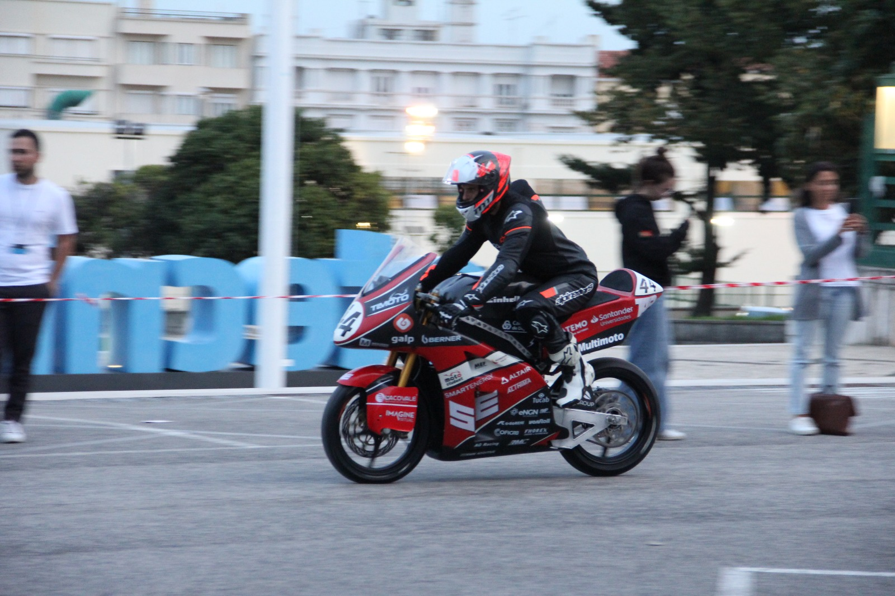

Curious about
how engineering
ideas become
real solutions.
I am a Mechanical Engineering MSc student at Politecnico di Milano, with a background in Aerospace Engineering. I enjoy working across mechanical design, structural analysis and numerical simulation, connecting engineering decisions with practical constraints and manufacturing.
Projects
A selection of academic and student-team projects, from early design concepts to numerical analysis, optimisation and manufacturing.

RED — Rocket Experiment Division
↗Structures & Aerodynamics team: CAD, FEM under compression, bending and buckling, carbon-fibre manufacturing and static tests. 4th overall at EuRoC 2024.

TLMoto — Electric Racing Motorcycle
↗Carbon-fibre swingarm concept, triple-clamp topology optimisation, frame design with dynamic analysis, and composite fairing manufacturing.

VTOL Aircraft — Firefighting & SAR
↗Tilt-wing VTOL for firefighting and rescue: mission definition, CAD, airfoil selection, FEM and sizing (MTOW ≈ 2,300 kg). Selected for the final presentation.

CFD — Computational Simulations
↗NACA 4415 airfoil and turbulent channel flow in OpenFOAM, comparing Spalart–Allmaras, k-ε and k-ω with mesh sensitivity studies.
Engineering with a practical perspective.
I am currently pursuing an MSc in Mechanical Engineering, specialising in Computational Mechanical Design at Politecnico di Milano. My BSc in Aerospace Engineering at Instituto Superior Técnico gave me a broad foundation in mechanics, structures, fluid dynamics and aircraft design.
Through student teams and academic projects, I have worked on the development of mechanical components and larger systems, using CAD and numerical tools to understand behaviour, compare alternatives and improve designs. I particularly value the link between modelling, manufacturing and how a component works in practice.
I am looking for an internship starting in February 2027 in mechanical design, structural analysis or product development, where I can contribute to engineering projects and continue developing my technical skills.
Politecnico di Milano · 2025–2027
Instituto Superior Técnico · 2022–2025
Experience
TLMoto · Electric Racing Motorcycle
Contributed to a carbon-fibre swingarm concept, triple-clamp topology optimisation, motorcycle frame design and composite fairing manufacturing.
AeroTéc · Rocket Experiment Division (RED)
Worked on CAD, FEM (compression, bending, buckling), carbon-fibre manufacturing support, static tests and integration of experimental rockets. The team placed 4th overall at EuRoC 2024 and received the S3 Flight Award.
AeroTéc · Semana Aeroespacial
Led promotional activities and content creation, coordinating a team to support the visibility and engagement of the event.
Skills
Technical tools developed through coursework, project work and student-team experience.
Mechanical design
SolidWorks · Siemens NX · Fusion 360 · Inventor
3D CAD · Technical drawing · Design development
Structural analysis
HyperMesh · Abaqus · FEMAP
FEM / FEA · Buckling · Topology optimisation
Computational engineering
OpenFOAM · CFD · RANS
Turbulence modelling · MATLAB
Manufacturing
Composite manufacturing · Carbon fibre
CNC machining · Mould preparation
Programming
MATLAB · C · Python
Languages
Portuguese — Native
English — Professional
French — B1 · Italian — Basic
Looking for new engineering challenges.
Currently looking for internship opportunities in mechanical design, structural analysis and product development, starting February 2027.